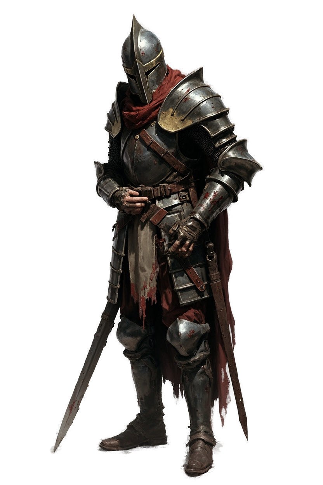
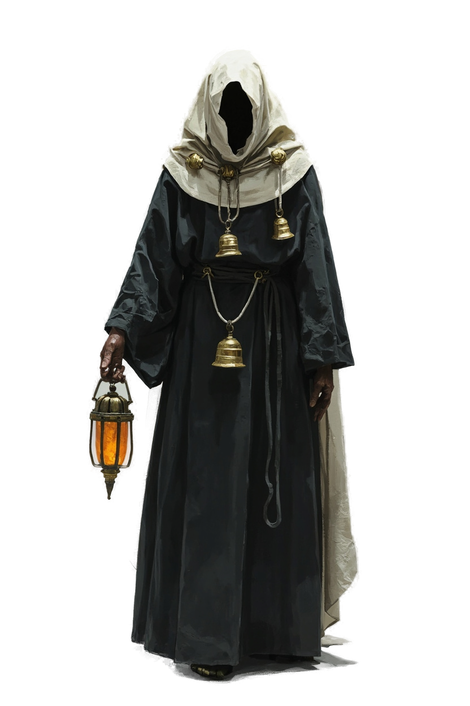
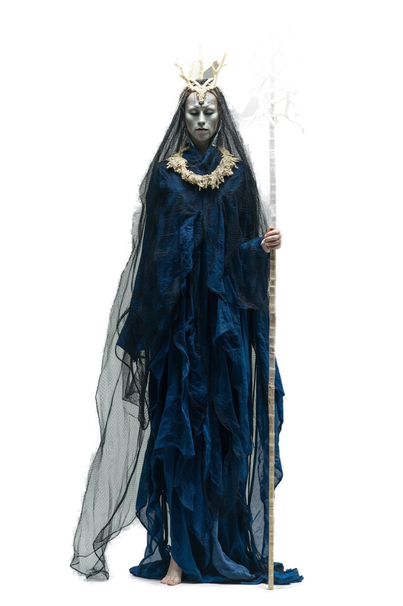
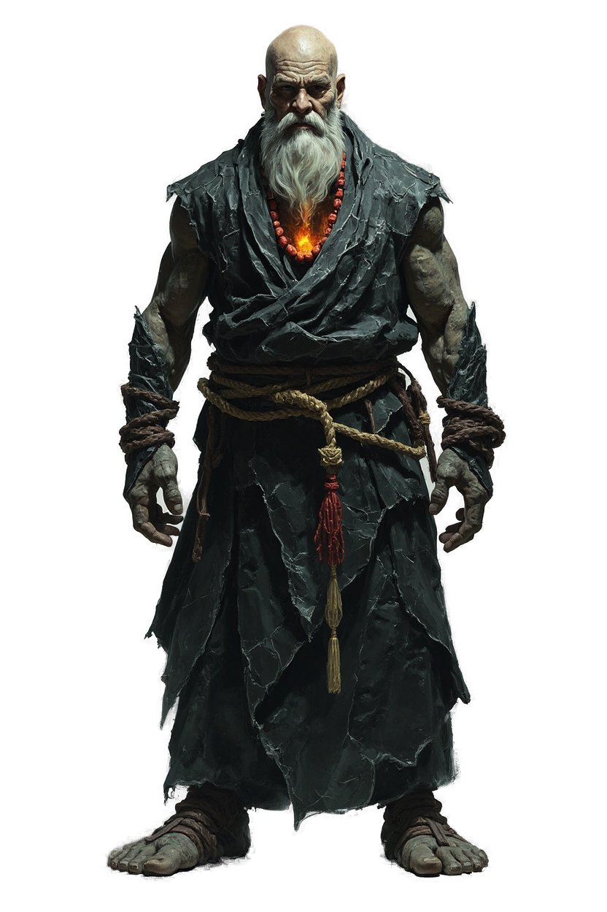
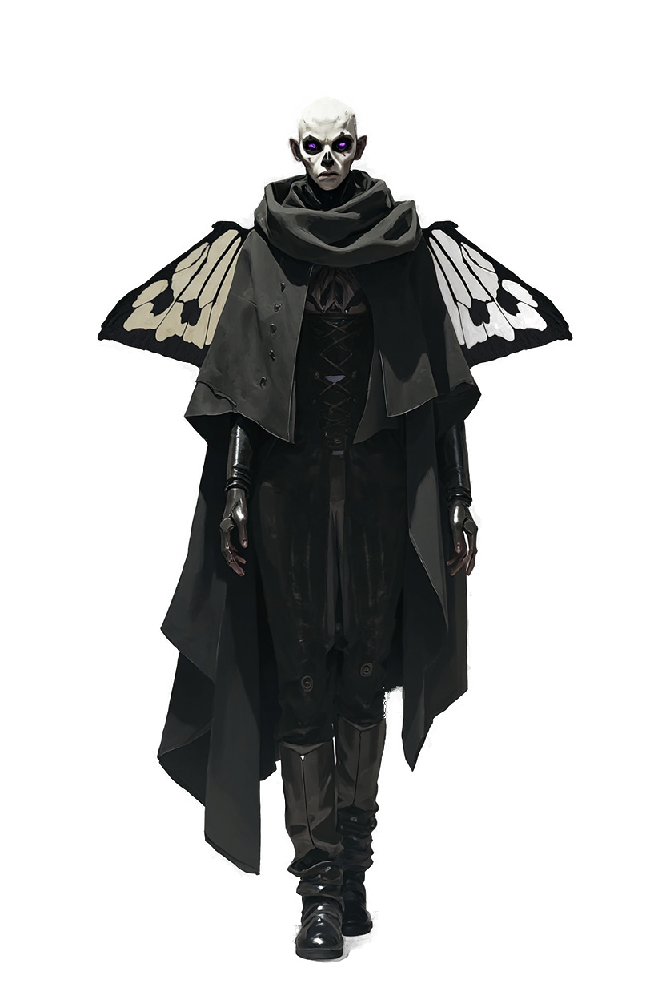
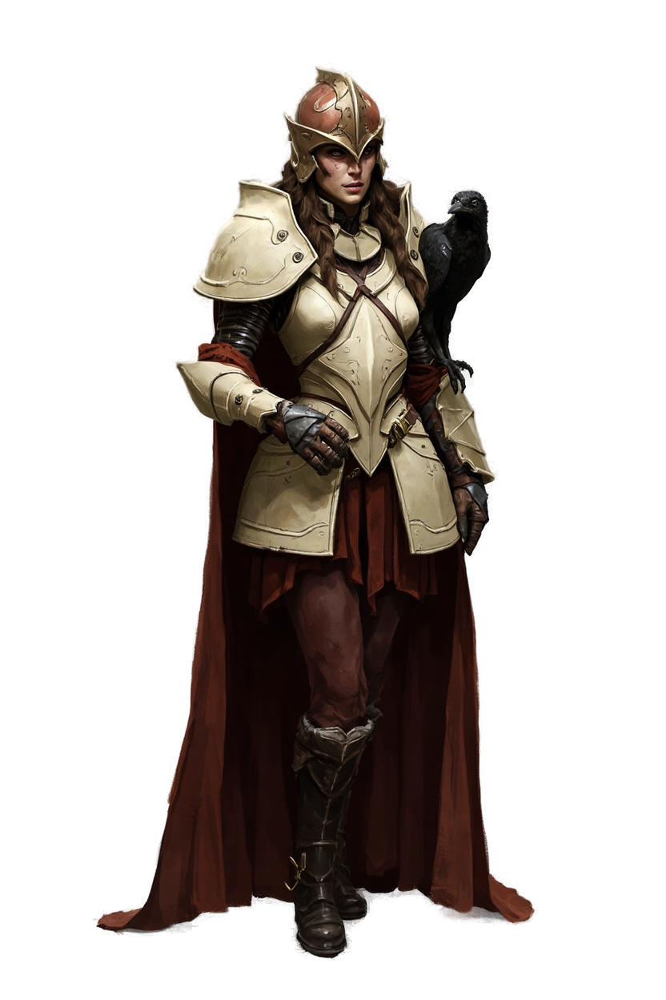

Las valoraciones se guardan en este navegador. Descárgalas para conservar una copia o compartirlas.
No hay propuestas con estos filtros.
Una cámara quieta. Dos ritmos.
En Estudios → Vídeo 3D → Biblioteca de planos → Dark Fantasy están las ocho composiciones. En el inspector de escena puedes elegir Cámara fija.
En El tiempo pesa, selecciona hero → Animar esta capa → Poses a saltos. Cambia cada imagen, su duración, altura y desplazamiento. Las poses son una capa con transparencia; el fondo conserva su reloj continuo.
Para movimiento continuo puedes importar un vídeo con canal alfa y activar Conservar transparencia. Un vídeo opaco necesita recorte previo: esta opción no borra su fondo.
Descarga un Plano y usa Abrir plano JSON, o importa la Plantilla reutilizable desde Mis escenarios. Las poses son dibujos generados por separado y pueden variar en pequeños detalles de la armadura; puedes sustituirlos en el editor.
Seis habitantes de la penumbra.
PNG con transparencia, generados y recortados en HocusPocus. Descárgalos o selecciónalos en la biblioteca de imágenes.
{kind=link}

La monja de las campanas
Descargar PNG ↓{kind=link}

La viuda de sal
Descargar PNG ↓{kind=link}

El monje de basalto
Descargar PNG ↓{kind=link}

El oráculo polilla
Descargar PNG ↓{kind=link}

{kind=link}